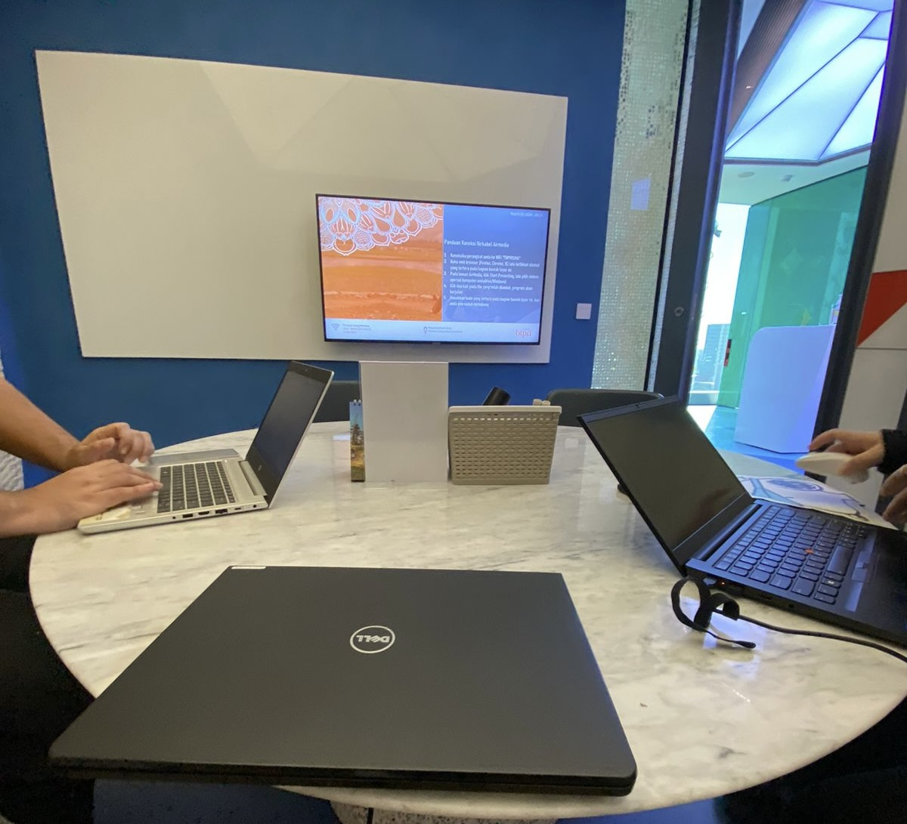
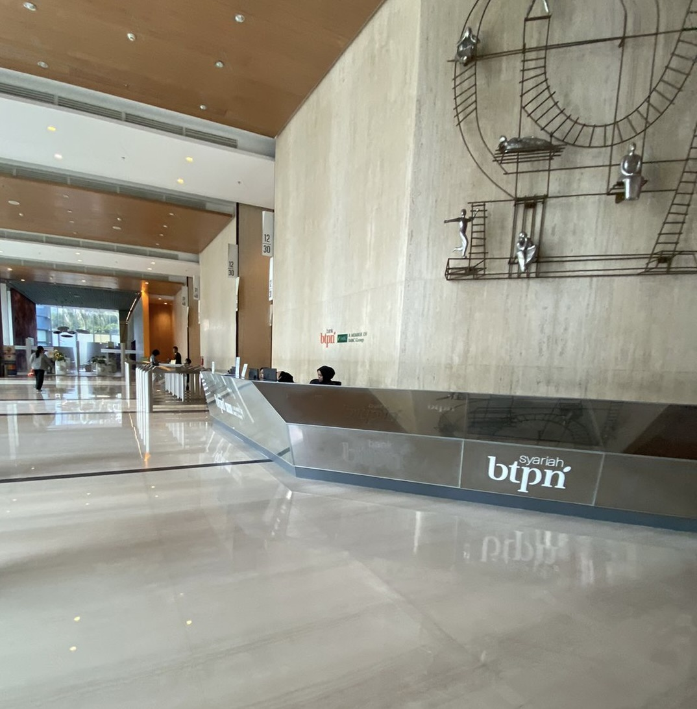
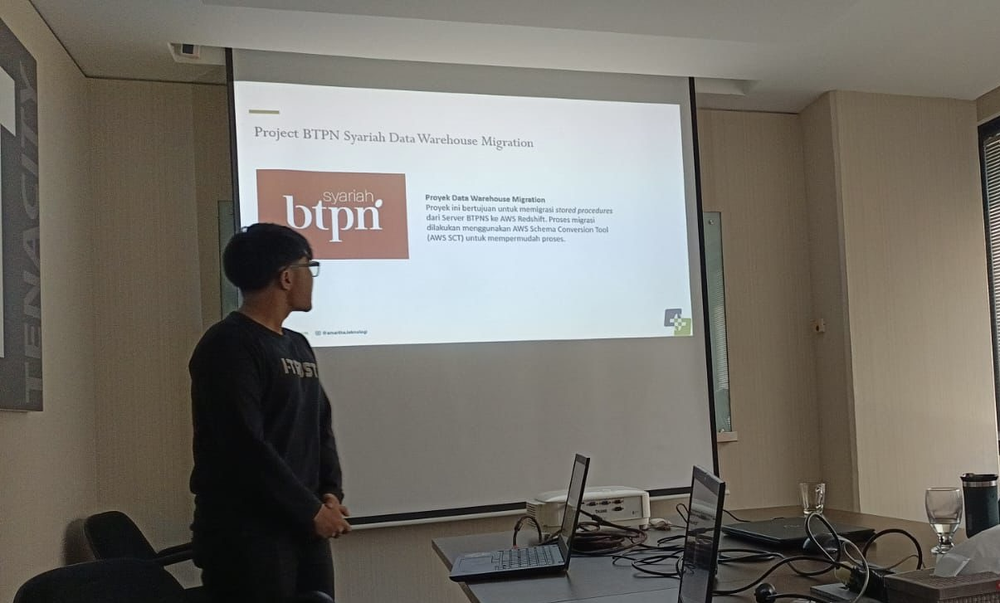

Client Project at PT Bank BTPN Syariah Tbk
Year
March - July 2024
Role
Data EngineerTools
- Database & ETL: SQL Server, AWS Redshift, SSIS, Talend
- AWS Services: AWS SCT, AWS Step Functions, AWS Lambda
- Languages: SQL (Dynamic SQL, Query Optimization), Python (basic scripting)
Project Description
Migrasi Stored Procedures (SP) dan tabel dari SQL Server ke AWS Redshift sebagai bagian dari pembangunan data warehouse internal BTPNS. Proyek ini bertujuan memastikan data dapat dipindahkan dengan akurat, konsisten, dan mendukung kebutuhan analisis bisnis.
Contributions
- Melakukan migrasi 359 Stored Procedures menggunakan AWS Schema Conversion Tool (SCT) dan skrip otomatisasi upload.
- Melaksanakan System Integration Testing (SIT) pada 239 SP untuk memastikan hasil perhitungan konsisten dengan sistem lama.
- Melakukan User Acceptance Testing (UAT) terhadap 242 SP untuk validasi kebutuhan bisnis.
- Melakukan migrasi tabel dari SQL Server ke AWS Redshift dengan memastikan struktur dan data sesuai.
- Melaksanakan rekonsiliasi data (Recon) antara SQL Server dan Redshift untuk menjaga konsistensi.
- Membantu merancang workflow otomatisasi data pipeline menggunakan AWS Step Functions untuk meningkatkan efisiensi pengelolaan data.
- Menyusun dokumentasi teknis dan laporan hasil migrasi sebagai panduan bagi tim selanjutnya.
Documentasi


